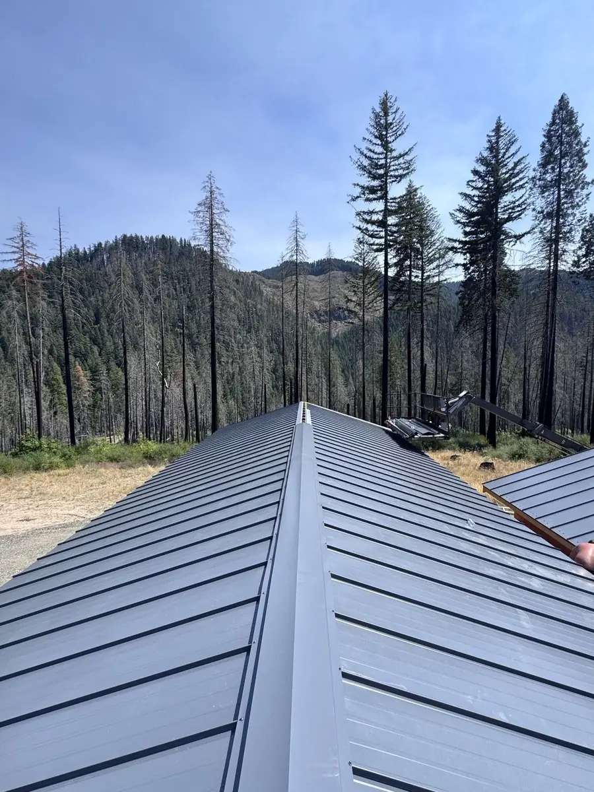
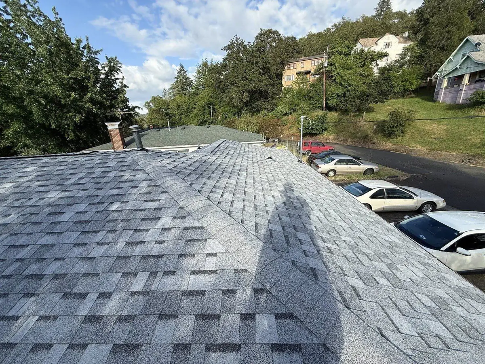

Metal Roofing · Riddle, OR
Metal roofing in Riddle, Oregon — from your neighbors down the street.
Our shop is at 595 E Third St, right here in Riddle. When we install a metal roof in the Cow Creek canyon, we're not driving down from Eugene — we're driving across town. And in a forested canyon that grows moss and worries about fire, metal is the roof that finally settles both.
Quick answer: metal roofing in Riddle
Metal roofing is an excellent fit for Riddle's canyon homes. The smooth, fast-draining surface sheds the moss and fir debris that Riddle's tree cover drops, handles our heavy winter rain, and carries a Class A fire rating for a town ringed by forested hills. It costs about 2–3× asphalt upfront but lasts 40–70 years — two to three times as long — so it's often cheaper per year you own the roof. Mistletoe Construction is based right in Riddle at 595 E Third St; there is no more local metal roofer.
Home Turf
We know Riddle roofs because we live under them.
Riddle sits tucked into the Cow Creek canyon in southern Douglas County, a short hop off I-5 between Canyonville and Myrtle Creek. It's forested, it's hilly, and the same Douglas-firs that shade our streets drop needles and cast the damp shadow that moss loves. Homes down along Cow Creek and up under Nickel Mountain collect debris in valleys and behind chimneys, and a wet Oregon winter keeps north slopes green with growth all season.
Then there's fire. Riddle is surrounded by timbered ridges, and canyon towns like ours pay close attention to ember exposure every dry summer. A metal roof addresses the whole list — debris, moss, rain, and fire — with one assembly. And because we're based in town, we can be on your roof for an estimate or a problem faster than anyone.
- Canyon & Cow Creek lots — shaded, needle-heavy planes where metal stays clean
- Forested-hill exposure — Class A fire assemblies for wildfire-conscious homeowners
- Older in-town homes & shops — aging roofs that benefit from a 50-year solution
- Outbuildings & barns — where through-fastened metal is an easy, affordable win

What You Get
A metal roof built for the canyon.
Two systems, one standard of work — installed by a crew you'll run into at the store.
Standing seam
Concealed-fastener panels for the cleanest look and longest life. The premium choice for the home you plan to keep.
Through-fastened
Exposed-fastener panels — affordable and tough, ideal for Riddle shops, barns, and value-minded reroofs.
Fire-smart build
Class A assemblies with proper underlayment and ember-resistant details for our forested surroundings.
Clean-deck tear-off
No roofing over old shingles in Douglas County — we start on an inspected, repaired deck every time.
The Offer
Hometown pricing: $500 off and free gutters.
Being local means our trucks and materials don't travel far, and we pass the efficiency on. Every new roof gets $500 off right now, plus free whole-home gutters on qualifying roofs of $20,000 or more. On a metal roof, gutters that handle Cow Creek canyon fir needles are the natural finishing touch. Curious how metal stacks up against shingles? Our metal vs. asphalt guide lays out the trade-offs.

The Honest Math
What metal costs in Riddle.
Expect roughly 2–3× the price of asphalt. Douglas County asphalt replacements generally land $10,000–$25,000, so metal sits above that depending on roof size, pitch, and system. But a metal roof outlives two or three asphalt roofs and skips the recurring moss-removal the canyon demands, so the lifetime math often favors it.
If asphalt is the better call for your timeline or budget, we'll tell you straight — shingle replacement is our bread and butter. For the full picture, read our metal roofing overview and our guide on how long roofs last in Oregon.
Questions
Riddle metal roofing FAQs
Do you really install metal roofs in Riddle?
Riddle is home. Our shop is at 595 E Third St, right in town, so this is as local as roofing gets. We install standing seam and through-fastened metal on homes, shops, and outbuildings throughout the Cow Creek canyon and up the South Umpqua.
Why is metal a good fit for a canyon home?
Riddle's canyon setting means shaded, forested lots that grow moss and collect debris, plus real wildfire exposure. Metal sheds the debris and moss that shorten asphalt roofs, drains winter rain fast, and carries a Class A fire rating — a combination that fits the canyon better than shingles.
How long will it last?
40–70 years properly installed, versus roughly 20–25 for asphalt in our climate. Because metal won't hold the moss and needles Riddle's tree cover drops, many homeowners here will never buy another roof.
Standing seam or through-fastened for my place?
Standing seam is the premium, concealed-fastener option for a home you'll keep; through-fastened is the affordable, durable choice for shops and barns. We'll walk your roof and recommend honestly — our comparison guide covers the difference.
Riddle, let's put a roof on that outlasts us all.
Free written estimate from the crew down the street — plus $500 off and free gutters on qualifying roofs.